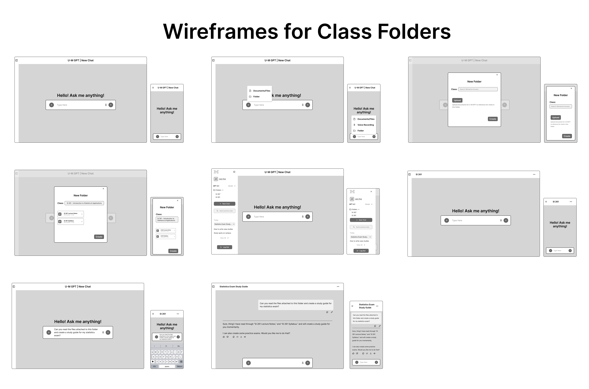
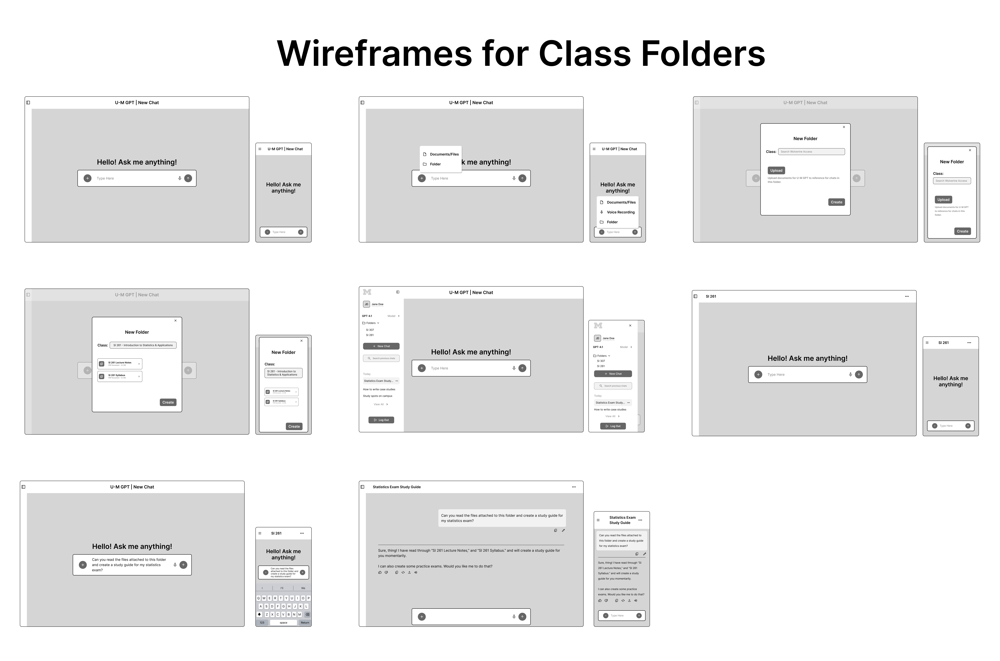

Project Overview
Design Challenge: Design a new feature for U-M GPT that enhances the AI tool for students.
Title: Class Folders feature for U-M GPT
Team & Timeline This is a solo project; September 18th, 2025 - Present
Role & Responsibilities: UX Designer; in charge of sketching 8 ideas, turing 1 idea into a task flow, and continuously building on that idea until it is finalized as a high-fidelity wireframe.
Tools: Figma.
Process & Approach
Context: For this class project, I was tasked to design a new feature for U-M GPT (my school's own generative AI interface) that is useful for students.
Research Method: There was a class-wide presentation from the stakeholder, in which I was able to take notes and gather an understanding of some expressed user pain points and the stakeholder's goals for U-M GPT:
U-M GPT's Principles:
- Security: Safe and secure running inside University of Michigan's structure and firewall.
- Privacy: Information (anything you put into U-M GPT) is not shared; data is not given out.
- Accessibility: U-M GPT meets the minimal level of accessibility requirements: automated tests with real people with accessibility needs who validates the automated tests.
- Equity: U-M GPT is accessible to all students, regardless of position, background, or ability (everyone has access to the same tools, no cost).
Stakeholder's Pain Points:
- Interface is really plain and basic
- Needs a better UI; needs to make sure the students know how to use it, and what it can do.
- Interface needs to be reviewed and optimized by a student's perspective.
Sketches, Task Flow, & Wireframes
Design Solution: I decided to build upon the "class folders" feature. It will allow students to create folders specific to their classes, and have the ability to upload documents (like class notes and syllabus) that U-M GPT will be able to reference while the student is chatting within a folder, would be a great addition. This feature will give students a reason to use U-M GPT because of its new personalization with classes and class-specific documents, and it will also help the students feel like they are getting responses quicker, as they will only have to upload documents once, and U-M GPT will be able to reference them when the student is asking those class-specific questions.
 

Upcoming
This project is still in the works. Come back to see where it take it next. Look forward to a complete redesign of the U-M GPT's interface and landing page, as well as more new features!